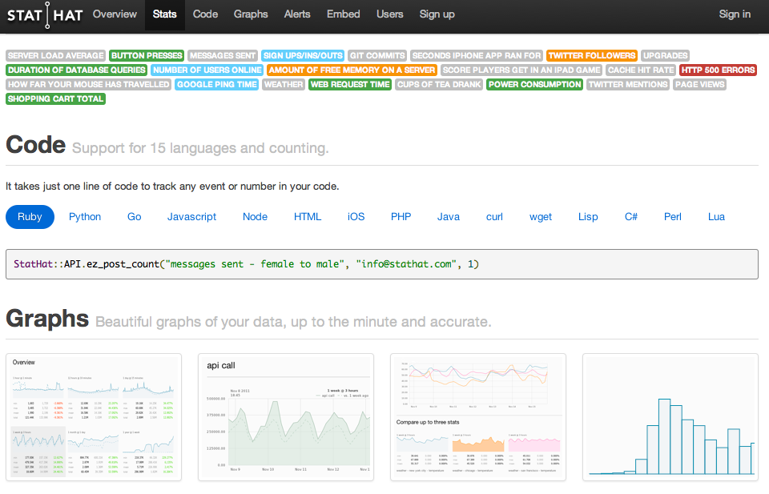
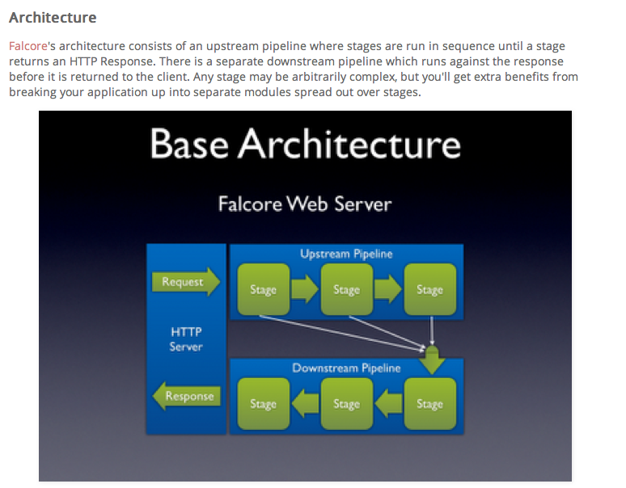

¿Why Go?
¿Por qué Go?
Victor Castell

Minds behind
Rob Pike: Unix, Plan 9
Ken Thompson: Unix, Plan 9, B and C
Russ Cox: Plan 9, Google Code Search, RE2
Robert Griesemer: V8, Java VM
Brad Fitzpatrick, Andrew Gerrand + lots of contributors
Russ Cox: Plan 9, Google Code Search, RE2
Robert Griesemer: V8, Java VM
Brad Fitzpatrick, Andrew Gerrand + lots of contributors
Precedents
Need for high-level programming in Unix
C++ became popular in the industry and research
Java - easy C++
Consecuences
C++ and Java are hard to use
They are verbose and difficult to read, IDE's are required
We need "patterns" to address it's difficulty
Widely adopted today
Performant
Reaction
Bad developer experience
Python, Ruby, Lua, JavaScript, Erlang
to sceneScala, Haskell
Golden era
Why this popularity?
Outsiders are dynamic
ease of use != dynamic
The good
Efficcient, performat and safe
Very powerful in expert hands.
Really big systems are built on them.
- Adapts well to corporate environments: lots of coders, big systems
The bad
not developer friendly.
Compilers are slow and clumsy. Binaries are huge.
Many programmers prefer to avoid them.
They are old and not well suitted to multicore networked development.
- JVM have limits in memory management and it already found it's bounds.
Dynamic
Don't have the downsides
Less keystrokes because of dinamyc typing
No compile time
But they also have the "bad":
- Slow
- Not type-safe (static errors occur at runtime)
- Doesn't scale well
- They're also not very modern (+10 years)
We need you superman!
We need a language that has the good, avoids the bad, and is suitable to modern computing infrastructure:
- statically typed
- fast execution, fast compilers
- light and easy to write
- fast to work in
- scales well
- doesn't require tools, but supports them well
- good at networking and multiprocessing
Enter Go
Fun, efficient and open source (true open source)
Go is statically typed and compiled, like C++ or Java (with no VM), but in many ways feels as lightweight and dynamic as JavaScript or Ruby.
Designed for modern computing (multicore)
Aimed at software such as webservers, but turned out to be a great general-purpose language.
Developed at Google
Hello World 2.0
//Serving http://localhost:8080/world:
package main
import (
"fmt"
"net/http"
"log"
)
func main() {
http.HandleFunc("/", func(w http.ResponseWriter, r *http.Request) {
fmt.Fprintf(w, "Hello, %q", r.URL.Path[1:])
})
log.Fatal(http.ListenAndServe(":8080", nil))
}
Highlights
Multiple return values
func foo() int, string {
return 1, "OK"
}
Named return parameters
func foo() (bar int){
bar = 2+2
return
}
Variadic input parameters
func Greeting(prefix string, who ...string)
Greeting("hello:", "Joe", "Anna", "Eileen")
Supports functional programming
first class functions
user-defined function types
function literals and closures
first class functions
user-defined function types
function literals and closures
Closures are just local functions
func foo(f func()) {
x := f()
func() {
println(x)
}()
}
Features
Type inference
foo := "This is a string type"Interfaces
type Foo interface {
privateMethod() int
PublicMethod() int
}
Interfaces are satisfied implicitly, every type that implements it's methods is satisfying the interface
This is very powerful!
Concurrency basics
Start a goroutine
go f()Channel sends
ch <- valueChannel receive
value = <-chStarting a goroutine
func (s *Service) Start() chan request {
ch := make(chan request)
go s.serve(ch) // s.serve runs concurrently
return ch // returns immediately
}
Dependency management
Dependencies are expressed in source code.
import "github.com/bmizerany/pat"
It serve for two purposes, import path and library repository.
Works better than 99% package managers out there.
Just push your code to a public repository and there is another lib out there.
The "go get" command download and install all rependencies.
Easy to define, easy to use.
Other Features
Emphasis on simplicity; easy to learn
Garbage collected
Memory layout control (pointers but no pointer arithmetic)
Consistent standard library
Self-documenting (and well-documented)
Integrated testing
Ultra fast compiler (can be used as scripting language)
Target i386, amd64, arm (Mobile development)
But.. as any respected language also has dramas
Status
Go 1 released 28/03/2012
Easy installation: Binaries for OSX, Linux, Windows
Stable, mature and suitable for real world problems
Used in production at big companies
Very active community and growing fast (+100 messages a day)
Erlang vs Scala vs Go
Erlang and Scala implements the Actor model, Go implements goroutines
Scala has thread based Actors that are heavyweight each one requires some amount of memory but it has other more optimized implementations.
goroutines are lightweight, threads are heavy
All three models uses channels for message to control it's internal state avoiding problems and complexity asociated with concurrent programming.
Erlang has write once variables
In Scala passing around primitive data like integers is expensive, because of the JVM legacy
The inevitable comparison
node.js/javascript doesn't have concurrency features but it could be compared as a server programming platform.
node standard lib is awesome but it's not enought for doing real work.
go stdlib is really awesome, http, templates, websockets, tar/zip, json, xml, sql, smtp, etc...
node code is by definition non-blocking and asynchronous.
go let's you write synchronous looking code which behaves like if it were asynchronous, without requiring you to handle the callback spaghetti.
Many libs in go stdlib are done non-blocking
The inevitable comparison
Fibonacci sequence made by the infamous post http://teddziuba.com/2011/10/node-js-is-cancer.html
node.js
var http = require('http');
function fibonacci(n) {
if (n < 2)
return 1;
else
return fibonacci(n-2) + fibonacci(n-1);
}
http.createServer(function (req, res) {
res.writeHead(200, {'Content-Type' : 'text/plain'});
res.end(fibonacci(40) + '');
}).listen(1337);
The inevitable comparison
Go
package main
import (
"fmt"
"net/http"
"log"
)
func fibonacci(n int) (result int) {
if n < 2 {
result = 1
} else {
result = fibonacci(n-2) + fibonacci(n-1)
}
return
}
func main() {
http.HandleFunc("/", func(w http.ResponseWriter, req *http.Request) {
w.Write([]byte(fmt.Sprintf("%d", fibonacci(40))))
})
log.Fatal(http.ListenAndServe(":8080", nil))
}
Show me the numbers!
node.js
time curl http://localhost:1337
165580141
real 0m3.379s
user 0m0.008s
sys 0m0.004s
Go
time curl http://localhost:8080
165580141
real 0m1.472s
user 0m0.007s
sys 0m0.007s
Projects using Go
Heroku Dozzer
Consistent, highly-available datastore

StatHat
Statistics tracker
NGmoco Falcore
Modular HTTP Web server framework
Moovweb
Desktop to mobile platform
Try it
Much more information at http://golang.org
including full source, documentation, and a playground that lets you try Go code right from the browser
References
http://teddziuba.com/2011/10/node-js-is-cancer.html
https://groups.google.com/forum/?fromgroups#!topic/golang-nuts/aAgIQiHVNq4
http://joshuakehn.com/2011/10/3/Diagnosis-No-Cancer.html
http://www.darkcoding.net/software/go-lang-after-four-months/